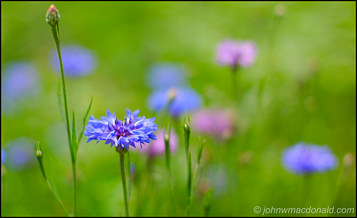

A wildflower (or wild flower) is a flower that grows wild, meaning it was not intentionally seeded or planted.
You can find interesting wild flowers everywhere in Britain

A wildflower (or wild flower) is a flower that grows wild, meaning it was not intentionally seeded or planted.
You can find interesting wild flowers everywhere in Britain
Copyright © Wild Flowers
Last Updated on 20/02/2010